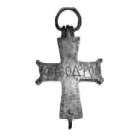
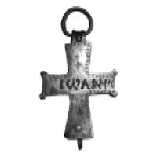

Catalog › CE-0557 · STE-2ab
Encolpion de bronz cu inscripții grecești, masiv (obr. 2 a–b)
sec. XII–XIII (1101–1300) · loc necunoscut · Muzeul de Istorie «Iskra», Kazanlak (Исторически музей «Искра» – Казанлък), fondul Arheologie–Medieval
double-sided reliquary cross (enkolpion), bronz; c. XII–XIII (1101–1300); find spot unknown; kept at Muzeul de Istorie «Iskra», Kazanlak (Исторически музей «Искра» – Казанлък), fondul Arheologie–Medieval.




Identificare
- Categorie
- Encolpion bivalv (relicvar)
- Material
- Bronz
- Tehnică
- Turnare în relief; Gravare (incizie)
- Dimensiuni
- Î 102 × L 52 mm
Iconografie
- Descriere avers
- Cruce-encolpion masiv de bronz, încadrat de un șir de «ochi de pasăre»; pe față inscripție incizată cu numele Teodor.
- Descriere revers
- Pe revers inscripție incizată cu numele Ioan.
- Inscripții
- Pe față «Α ΘΕΟΔΟΡΟΣ», pe revers «ΙΩΑΝΙ» (litere grecești, transcrise după fontul din sursă)
- Limba
- Greacă
Datare și atribuire
- Datare
- sec. XII–XIII (1101–1300)
Descoperire
- Context
- Necunoscut
- Coordonate
- 42.6194° N, 25.3930° E
- Precizia locului
- Loc de păstrare (loc de descoperire incert)
Păstrare și referințe
- Colecție
- Muzeul de Istorie «Iskra», Kazanlak (Исторически музей «Искра» – Казанлък), fondul Arheologie–Medieval
- Bibliografie
- Кр. Стефанова-Георгиева, Християнски символи (XI–XIII в.) – елементи от духовната култура на Казанлъшкия район, p. 595–598 [Стефанова-Георгиева, volum neidentificat în PDF], обр. 2 а–б, reprodusă la обр. 2 а–б (p. 598). Autoarea trimite la Дончева-Петкова Л. 1990, За някои типове кръстове-енколпиони с надписи, «Нумизматика», 2, p. 21–27.
- Figura
- обр. 2 а–б
- Planșe
- Стефанова-Георгиева, p. 598
- Observații
- Provenit din fondul muzeului, cu loc al descoperirii necunoscut. Dimensiuni: înălțime 10,2 cm, lățime 5,2 cm. Inscripțiile sunt incizate. Autoarea spune că crucile sunt lucrate în tehnică mixtă (turnare și gravare ulterioară a detaliilor) și le datează în sec. XII–XIII; necropola din Krăn este datată în sec. XI–XIV. Locul descoperirii nu e cunoscut cu precizie; punctul de pe hartă marchează locul de păstrare (Muzeul de Istorie «Iskra»), nu locul descoperirii. Coordonate: nu sunt date în sursă.
Citare: Corpus Encolpiorum, CE-0557, Encolpion de bronz cu inscripții grecești, masiv (obr. 2 a–b), https://vitaliejosanu1979-ux.github.io/primul-meu-proiect/piese/STE-2ab/ (accesat 2026-10-17).